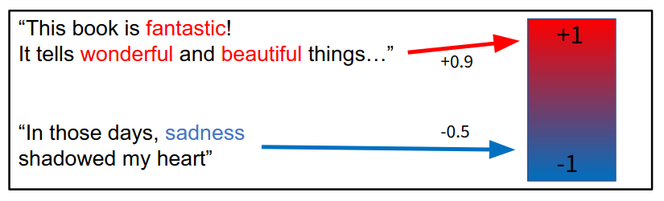
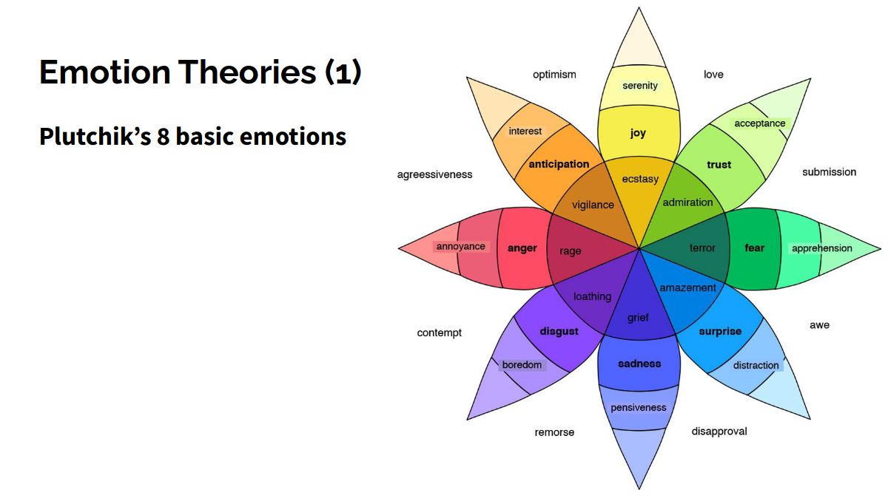
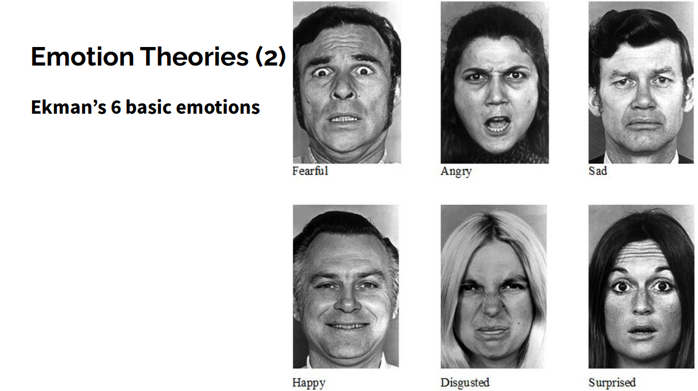
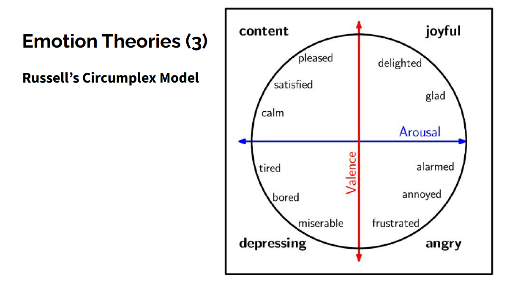
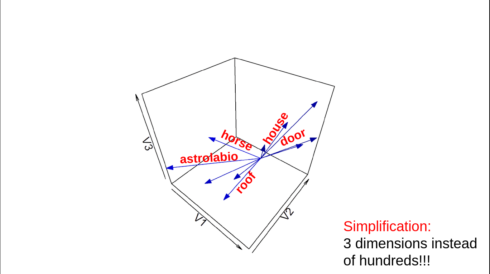
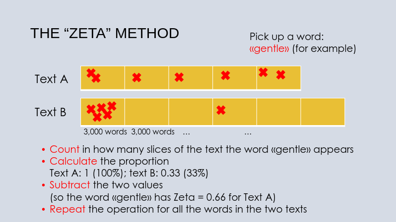
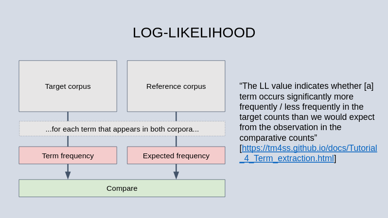

<!doctype html>
<html lang="en">
<head>
<meta charset="utf-8">
<!-- CUSTOMIZE THIS! -->
<title>Advanced Digital Humanities Lab</title>
<meta name="author" content="Simone Rebora">
<!-- END -->
<meta name="description" content="Slides">
<meta name="apple-mobile-web-app-capable" content="yes">
<meta name="apple-mobile-web-app-status-bar-style" content="black-translucent">
<meta name="viewport" content="width=device-width, initial-scale=1.0, maximum-scale=1.0, user-scalable=no, minimal-ui">
<link rel="stylesheet" href="css/reveal.css">
<link rel="stylesheet" href="css/theme/simple.css" id="theme">
<!-- Code syntax highlighting -->
<link rel="stylesheet" href="lib/css/zenburn.css">
<!-- Printing and PDF exports -->
<script>
var link = document.createElement( 'link' );
link.rel = 'stylesheet';
link.type = 'text/css';
link.href = window.location.search.match( /print-pdf/gi ) ? 'css/print/pdf.css' : 'css/print/paper.css';
document.getElementsByTagName( 'head' )[0].appendChild( link );
</script>
<!--[if lt IE 9]>
<script src="lib/js/html5shiv.js"></script>
<![endif]-->
</head>

<body>
<div class="reveal">
<div class="slides">
<section data-markdown="" data-separator="^\n---\n" data-separator-vertical="^\n--\n" data-charset="utf-8">
<script type="text/template">

<!-- THIS IS WHERE THE CONTENT GOES! -->
<!-- Any section element inside of this container is displayed as a slide -->


# Advanced Digital Humanities Lab 
<br/>
<br/>
## Simone Rebora
<br/>
<br/>
<br/>
<br/>
*University of Verona*
<br/>
<br/>
</img>


---
## Overview
<br/>
- Text analysis  
- Data visualisation
- Programming languages: R and Python
- Case study: Digital Social Reading  
<br/>
GitHub repository:  
[github.com/SimoneRebora/DHLabVerona](https://github.com/SimoneRebora/DHLabVerona)

--
## Program 
<br/>
Nine weeks, eight subjects:
- introduction to the tools (GitHub and R programming)
- web scraping
- stylometry
- sentiment analysis
- topic modeling
- machine learning
- maps
- networks

--
## Exam 
<br/>
Evaluation of a project, which will have to be published
<br/>*on the GitHub platform.*


---
# GitHub

--
## Part 1. What is GitHub? 
<br/>
- not just a place, but a community
- a place where to store documents and scripts
- a place where to share and work together

--
## Let's explore GitHub 

...starting from [my GitHub profile](https://github.com/SimoneRebora)

--
## First activity
<br/>
**Create your own GitHub profile!**
- browse to *github.com*
- click on Sign Up!
- copy/paste your profile URL *on the Moodle*
<br/>
<br/>
</img>

--
## Second activity

**Create a GitHub repository**
- define title, visibility, license...
- update the README.md file using markdown syntax<!-- .element: class="fragment" data-fragment-index="1" -->
    - [markdown cheat-sheet](https://www.markdownguide.org/cheat-sheet/)<!-- .element: class="fragment" data-fragment-index="1" -->
- create a file online<!-- .element: class="fragment" data-fragment-index="2" -->
- update a file from your computer<!-- .element: class="fragment" data-fragment-index="3" -->
- change visibility<!-- .element: class="fragment" data-fragment-index="4" -->

--
## Third activity
<br/>
**Create a webpage using GitHub** 
<br/>
<br/>
You can find a (very simple) tutorial [here](https://github.com/SimoneRebora/DHLabVerona/blob/main/tutorials/webpage_creation.md)

--
## Part 2. Using GitHub with Git 
<br/>
The goal: learn how to use the [Git](https://git-scm.com/) version-control language  
(...which **is not** GitHub!)
<br/>
<br/>
</img>


--
## How does GitHub work? 
<br/>
</img>


--
## First activity
<br/>
**Get acquainted with Git through RStudio**
- open RStudio
- create a project starting from your own GitHub repository

--
## Second activity
<br/>
**Push changes**
<br/>
<br/>
First of all, you will need to create a personal access token. You can find a simple tutorial [here](https://github.com/SimoneRebora/DHLabVerona/blob/main/tutorials/push_changes.md)
<br/>
<br/>
Then modify/create/delete a file in your computer  
...and push the change to the repository

--
## Third activity
<br/>
**Pull changes**
<br/>
<br/>
Change something in the GitHub repository online (e.g. create a random file, like "ciao.txt").
<br/>
<br/>
Then pull the change to your computer


--
## Last activity
<br/>
**Fork a repository**
<br/>
<br/>
Fork *this* repository into your GitHub account  
[github.com/SimoneRebora/DHLabVerona](https://github.com/SimoneRebora/DHLabVerona)


---
# R and RStudio
<br/>
All scripts [here](https://github.com/SimoneRebora/DHLabVerona/tree/main/scripts/1.R_intro)


---
# Web Scraping
<br/>
i.e. automatically downloading data from the Internet  
...to create datasets for analysis


--
## Two main possibilities:
<br/>
- Using APIs (application programming interfaces)
- Directly from the HTML


--
## APIs
<br/>
Advantages:  
- created by website managers, provide structured data
- no copyright issues  
<br/>
<center>Disadvantages:</center>  
- not all info is available
- not all websites have them  

--
## APIs Example: Twitter API
<br/>
Requirements: 
1. create a developer account for Twitter
2. create an App  
<br/>
Instructions [here](https://developer.twitter.com/en/docs/twitter-api/getting-started/getting-access-to-the-twitter-api) (steps 1 and 2)  
<br/>
Sample scripts [here](https://github.com/SimoneRebora/DHLabVerona/tree/main/scripts/2.Scraping)  
Keys (valid just for this Lab session!) are in the Moodle


--
## Scraping HTML
<br/>
Advantages:  
- you can get everything you like!  
<br/>
<center>Disadvantages:</center>  
- possible copyright/privacy issues
- more complex  


--
## Copyright Issues
<br/>
Always be careful, read terms of use!  
Never publish scraped material if not sure...  
<br/>
<center>*Research exceptions*</center>
Recently, also in Italy! See [decreto legislativo n. 177/2021](https://www.normattiva.it/uri-res/N2Ls?urn:nir:stato:decreto.legislativo:2021-11-08;177)  
(Legge sul diritto d'autore, art. 70ter)


--
## HTML Scraping examples
<br/>
With the *rvest* R package  
Sample scripts [here](https://github.com/SimoneRebora/DHLabVerona/tree/main/scripts/2.Scraping)  


---
# Sentiment Analysis
<br/>
i.e. computational analysis of emotions in text  
<br/>
</img>

--
</img>

--
</img>

--
</img>

--
## SA with R
<br/>
With the *syuzhet* R package  
Sample scripts [here](https://github.com/SimoneRebora/DHLabVerona/tree/main/scripts/3.Sentiment_analysis) 


--
## Multi-language SA
<br/>
What you need:  
- a sentiment dictionary in a different language
    - see for example [the OpeNER project](https://github.com/opener-project/public-sentiment-lexicons)
- a bit of NLP

--
## VSM-based dictionaries
<br/>
*Distributional semantics*  
“You shall know a word by the company it keeps” (Firth, 1957)  

*Vector Space Models*  
(also known as word embeddings)
- built on large text collections
- using distributional semantics (advanced algorithms)
- creating representations of words as multi-dimensional vectors

--
## Vector Space Models
<br/>
</img>

--
## VSM-based dictionaries
<br/>
- define a list of "seed words" for the basic emotions
- calculate distances between all words in the vocabulary and the seed words
- distances are values in the sentiment dictionary  
<br/>
Example: [SentiArt](https://github.com/matinho13/SentiArt)

--
## Advanced SA with R
<br/>
With the *udpipe* R package  
Sample scripts [here](https://github.com/SimoneRebora/DHLabVerona/tree/main/scripts/3.Sentiment_analysis) 


---
# Machine learning
<br/>
Interactive slides [here](https://prezi.com/p/u2jhevr_mn59/?present=1) 

--
## ML with you, R, and Python
<br/>
1. Manually annotate some texts
2. Process the annotations
3. Train/test ML algorithms  
<br/>
Sample scripts [here](https://github.com/SimoneRebora/DHLabVerona/tree/main/scripts/4.Machine_learning) 


---
# Stylometry
<br/>
Interactive slides [here](https://prezi.com/p/yne95ewej45l/?present=1) 

--
## Stylometry with R
<br/>
Using the "stylo" package.  
Sample scripts [here](https://github.com/SimoneRebora/DHLabVerona/tree/main/scripts/5.Stylometry) 

--
## Keyness analysis
<br/>
Two main approaches:  
- with Frequency (e.g. log-likelihood) you get how many times a word is used
- with Dispersion (e.g. Zeta) you get how consistent is this use 

--
</img>

--
</img>

--
## Keyness analysis with R
<br/>
Using the "stylo" and "quanteda" packages.  
Sample scripts [here](https://github.com/SimoneRebora/DHLabVerona/tree/main/scripts/5.Stylometry) 

---
# Networks

--
## Undirected networks
<br/>
</img>

--
## Directed networks
<br/>
</img>

--
## Necessary ingredients
<br/>
- Table of nodes
- Table of edges
- Spacial algorithm

--
## Network analysis with R and Gephi
<br/>
Sample scripts [here](https://github.com/SimoneRebora/DHLabVerona/tree/main/scripts/6.Networks) 


</script>
</section>


<!-- DON'T TOUCH UNLESS YOU KNOW WHAT YOU'RE DOING :-) -->
</div>
<script src="lib/js/head.min.js"></script>
<script src="js/reveal.js"></script>
<script>
// Full list of configuration options available at:
// https://github.com/hakimel/reveal.js#configuration
Reveal.initialize({
    controls: true,
    progress: true,
    slideNumber: true,
    history: true,
    center: true,
    transition: 'slide', // none/fade/slide/convex/concave/zoom
    // Optional reveal.js plugins
    dependencies: [
        { src: 'lib/js/classList.js', condition: function() { return !document.body.classList; } },
        { src: 'plugin/markdown/marked.js', condition: function() { return !!document.querySelector( '[data-markdown]' ); } },
        { src: 'plugin/markdown/markdown.js', condition: function() { return !!document.querySelector( '[data-markdown]' ); } },
        { src: 'plugin/highlight/highlight.js', async: true, callback: function() { hljs.initHighlightingOnLoad(); } },
        { src: 'plugin/zoom-js/zoom.js', async: true },
        { src: 'plugin/notes/notes.js', async: true }
        ]
    });
</script>
</body>
</html>
